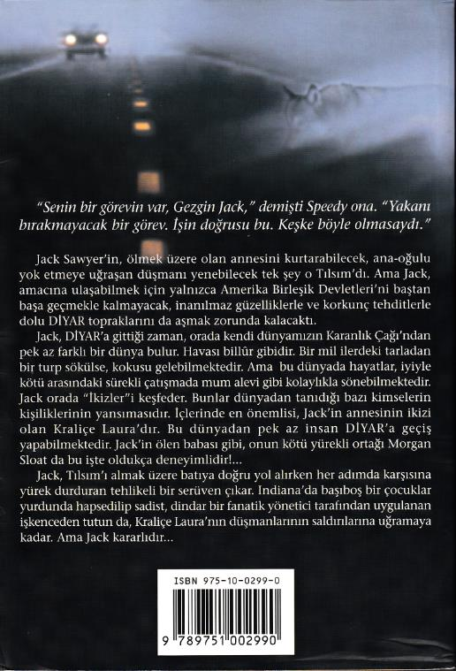

"Senin bir görevin var, Gezgin Jack," demişti Speedy ona. "Yakanı bırakmayacak bir görev. İşin doğrusu bu. Keşke böyle olmasaydı."
Jack Sawyer'in, ölmek üzere olan annesini kurtarabilecek, ana-oğulu yok etmeye uğraşan düşmanı yenebilecek tek şey o Tılsım'dı. Ama Jack, amacına ulaşabilmek için yalnızca Amerika Birleşik Devletleri'ni baştan başa geçmekle kalmayacak, inanılmaz güzelliklerle ve korkunç tehditlerle dolu DİYAR topraklarını da aşmak zorunda kalacaktı.
Jack, DİYAR'a gittiği zaman, orada kendi dünyamızın Karanlık Çağı'ndan pek az farklı bir dünya bulur. Havası billur gibidir. Bir mil ilerdeki tarladan bir turp sökülse, kokusu gelebilmektedir. Ama bu dünyada hayatlar, iyiyle kötü arasındaki sürekli çatışmada mum alevi gibi kolaylıkla sönebilmektedir. Jack orada "İkizler"i keşfeder. Bunlar dünyadan tanıdığı bazı kimselerin kişiliklerinin yansımasıdır. İçlerinde en önemlisi, Jack'in annesinin ikizi olan Kraliçe Laura'dır. Bu dünyadan pek az insan DİYAR'a geçiş yapabilmektedir. Jack'in ölen babası gibi, onun kötü yürekli ortağı Morgan Sloat da bu işte oldukça deneyimlidir!...
Jack, Tılsım'ı almak üzere batıya doğru yol alırken her adımda karşısına yürek durduran tehlikeli bir serüven çıkar. Indiana'da başıboş bir çocuklar yurdunda hapsedilip sadist, dindar bir fanatik yönetici tarafından uygulanan işkenceden tutun da, Kraliçe Laura'nın düşmanlarının saldırılarına uğramaya kadar. Ama Jack kararlıdır...
